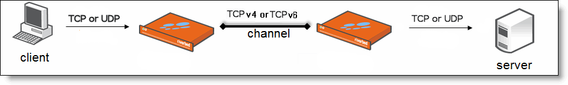

In-path rules are used only when a connection is initiated. Because connections are usually initiated by clients, in-path rules are configured for the initiating, or client-side Steelhead appliance. In-path rules determine Steelhead appliance behavior with SYN packets.In-path rules are an ordered list of fields a Steelhead appliance uses to match with SYN packet fields (for example, source or destination subnet, IP address, VLAN, or TCP port). Each in-path rule has an action field. When a Steelhead appliance finds a matching in-path rule for a SYN packet, the Steelhead appliance treats the packet according to the action specified in the in-path rule.TCP SYN packet arrives on the LAN interface of physical in-path deployments. TCP SYN packet arrives on the WAN0_0 interface of virtual in-path deployments. Both of these scenarios are associated with the first, or initiating, SYN packet of the connection. Because most connections are initiated by the client, you configure your in-path rules on the client-side Steelhead appliance. In-path rules have no effect on connections that are already established, regardless of whether the connections are being optimized.In-path rule configurations differ depending on the action: for example, both the fixed-target and the auto-discovery actions allow you to choose what type of optimization is applied, what type of data reduction is used, what type of latency optimization is applied, and so on.RiOS v7.0 and later includes fixed-target, packet-mode optimization in-path rules. The Steelhead appliance treats the packets for packet-mode optimization rules differently from the in-path rules described in this overview. For details, see Creating In-Path Rules for Packet-Mode Optimization.RiOS v8.5 and later expands packet-mode optimization to include TCPv4 and UDPv6 traffic. In addition, RiOS enhances connection or flow reporting for packet-mode optimization. To optimize TCPv4 or UDPv6, the client-side and server-side Steelhead appliances must run RiOS v8.5.For details on IPv6 deployment options, see the Steelhead Appliance Deployment Guide.Optimization Policies - Optimize connections using scalable data reduction, compression, both, or none. VLAN Tags - Apply a rule to a specific VLAN or all VLANs. Preoptimization Policies - Special handling required for Oracle Forms over SSL support. Latency Policies - Set to normal, none, or HTTP to support HTTP traffic. Special handling required for Oracle Forms over SSL support. Neural Framing Requirements - Specify never, always, TCP Hints, or Dynamic. WAN Visibility - Preserve TCP/IP address or port information. RiOS performs packet-by-packet SDR bandwidth optimization on TCP and UDP flows over both IPv4 and IPv6, using fixed-target, packet-mode optimization in-path rules. This type of in-path rule optimizes bandwidth for applications over any transport protocol.Sometimes you might want to use the Steelhead appliance optimization to reduce the amount of traffic traversing the WAN. Packet-mode optimization provides a simple approach where the Steelhead appliance looks at a packet, or small group of packets, and performs SDR and LZ on the data payload for data reduction. The host and Steelhead appliance do not create an individual TCP handshake, and the Steelhead appliance reduces payload for packets as the traffic flows through.The advantage of packet-mode optimization is that it is a universal method that applies data streamlining to diverse protocols. The disadvantage is the lack of performance benefits from transport streamlining or application streamlining, because the Steelhead appliance does not proxy or perform intelligent application prediction.Figure 3‑1. A Fixed-Target Packet-Mode Optimization Rule Creates an Inner TCPv4 or TCP v6 Channel Between the Steelhead AppliancesIn RiOS v8.5, consider using the typical terminated TCP optimization to improve application latency instead of packet-mode for TCPv4 or TCPv6 traffic. RiOS v8.5 includes TCP proxy-mode optimization for IPv6 traffic. To use terminated TCP optimization after upgrading from RiOS v8.0.x to v8.5, you must change any existing in-path rule used for packet-mode IPv4 or IPv6 optimization to a terminated optimization rule.Upgrading from RiOS v8.0.x (or earlier) to v8.5 might require a configuration modification to deployments optimizing only the server-to-client direction of a TCPv6 connection using packet-mode.Consider a deployment running RiOS v8.0 with packet-mode optimization enabled on the client- and server-side Steelhead appliance. The server-side Steelhead appliance is configured with server-to-client fixed-target packet-mode rules. As a result, any traffic flowing from the server to the client for connections that originated at the client receive packet-mode optimization.The packet-mode rules exist only on the server-side Steelhead appliance. No other rules are configured on the client- or server-side Steelhead appliances.Because the client-side Steelhead appliance does not have fixed-target rules matching the client to server traffic, it passes it through according to the default TCPv6 rule.After upgrading the client- and server-side Steelhead appliances to RiOS v8.5 in this deployment scenario, connections originating from the client toward the server now receive terminated TCP optimization. This happens because RiOS v8.5 supports terminated optimization for TCPv6 and the connections originating from the client now match the default optimization (terminated-mode) rule on the client-side Steelhead appliance. As a result, the server-to-client traffic of these connections also receives terminated TCP optimization.To continue passing through the client-to-server traffic and optimizing the server-to-client traffic using packet-mode, as before the upgrade, you need to configure a pass-through in-path rule on the client-side Steelhead appliance.When you create a fixed-target packet-mode optimization rule, you define the inner channel characteristics using these controls: source and destination subnet, source destination port or port labels, and DSCP marking.Physical in-path Virtual in-path WCCP/PBR or TCPv4, UDPv4 PBR for TCPv6, UDPv6 Master and backup (both Steelhead appliances must be running RiOS v7.0 or later) Out-of-path Serial cluster Interceptor integration For details, see Configuring In-Path Rules. For design considerations and best practices, see the Steelhead Appliance Deployment Guide.
|
|